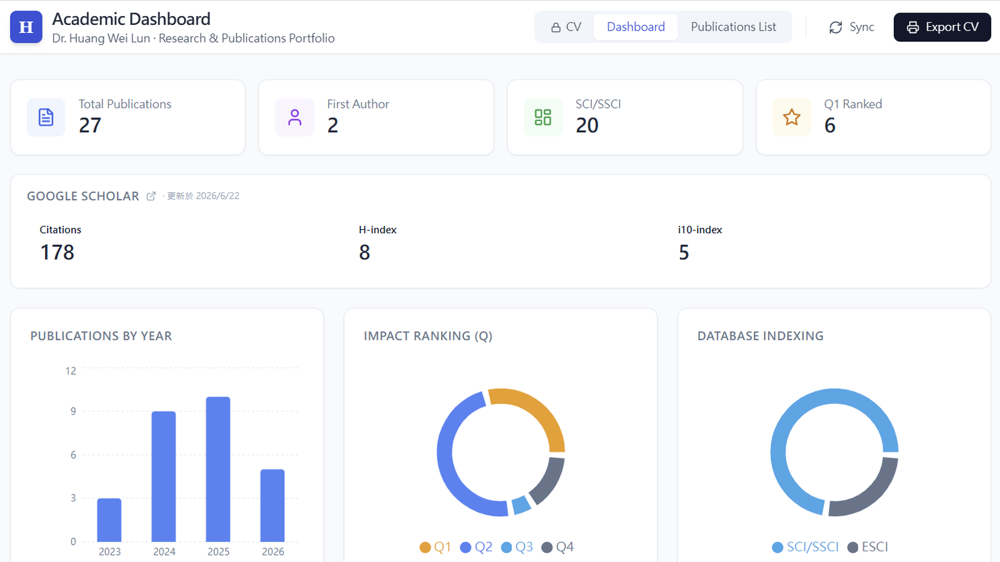

BI儀表板
學術發表儀表板
2026.06 · 個人專案

FIG. 01 — 產品主畫面
關於這個作品
把零散的學術發表紀錄整理成一套完整的個人研究作品集儀表板。
首頁一眼看到總發表數、第一作者篇數、SCI/SSCI 收錄數與 Q1 期刊數；下方即時串接 Google Scholar，顯示引用數、H-index 與 i10-index。
圖表區呈現歷年發表趨勢、期刊 Q 值分布與資料庫收錄比例，下方則是可搜尋的完整期刊清單，並支援匯出標準格式的個人 CV。
作品亮點
一頁式儀表板：發表總覽 + Google Scholar 指標 + 視覺化圖表
Publications By Year、Impact Ranking、Database Indexing 三圖並列
即時搜尋期刊清單，一鍵匯出 CV PDF
Sync 功能定期更新 Google Scholar 引用數據